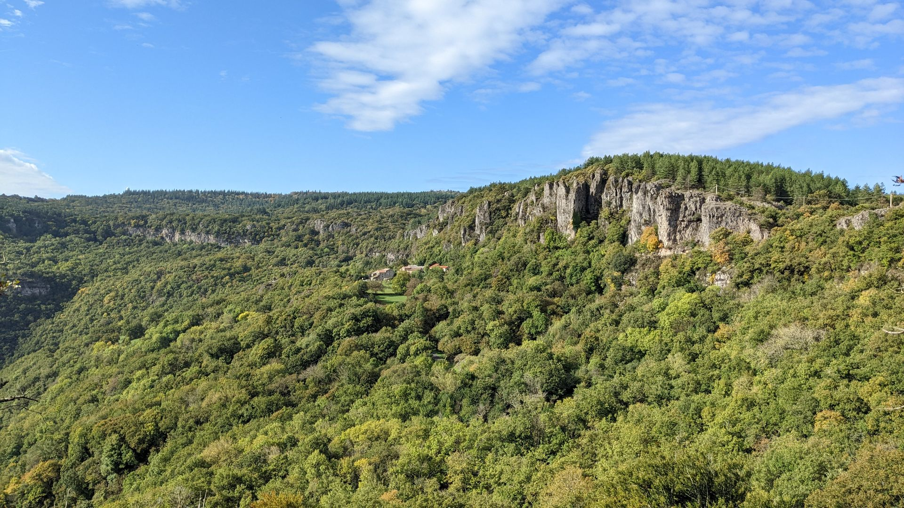
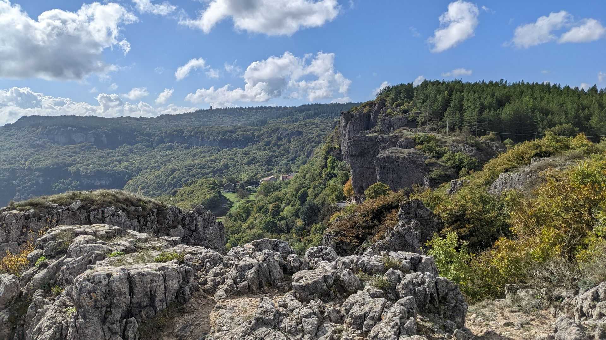
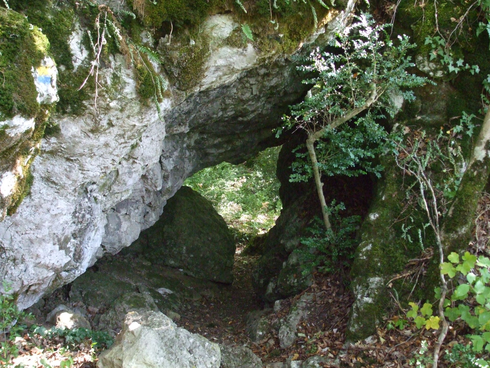
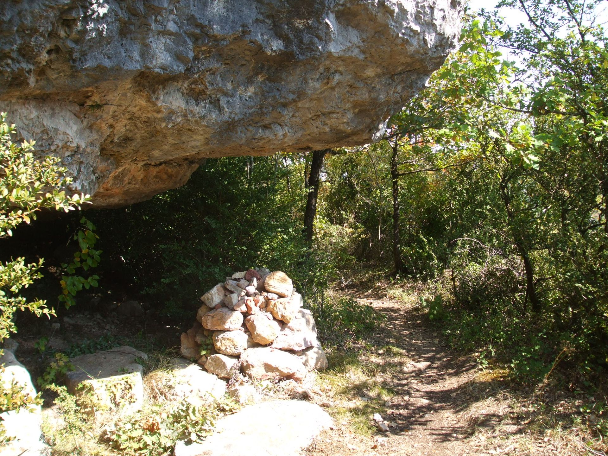
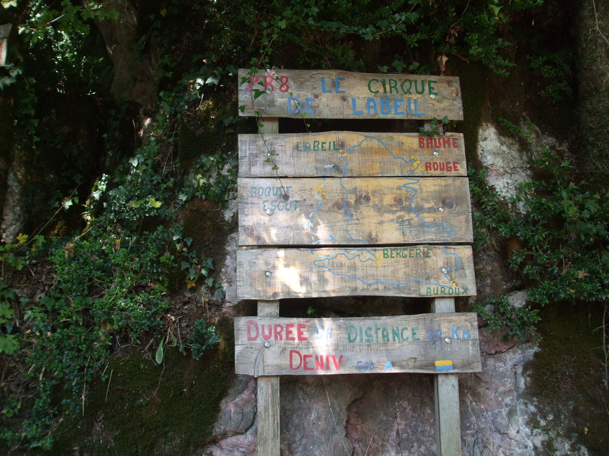
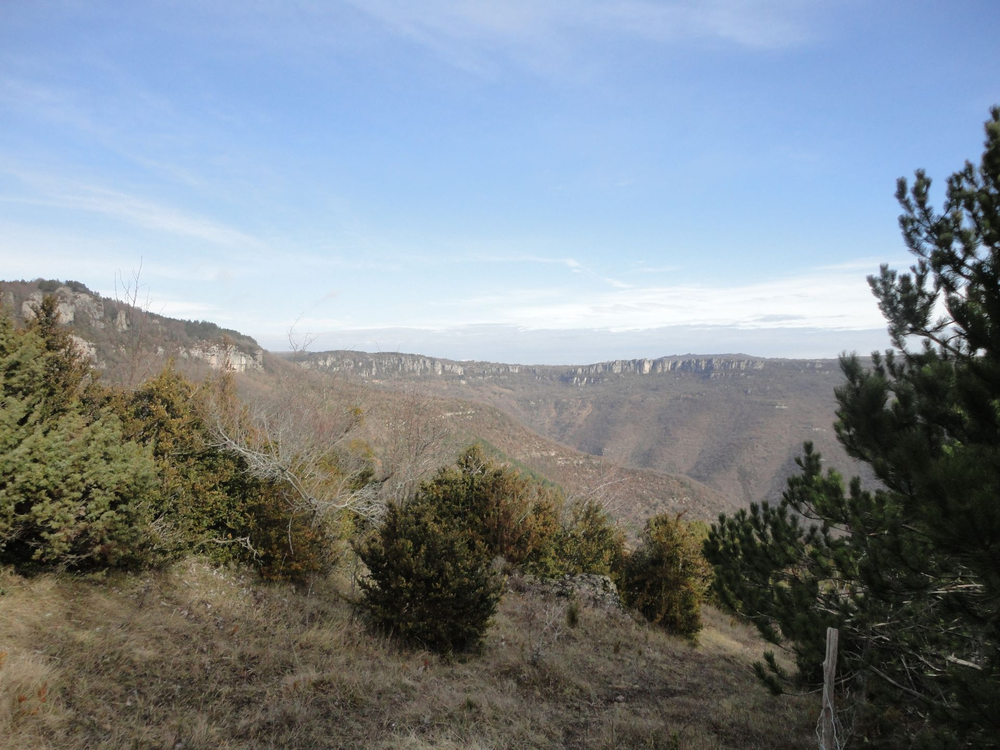
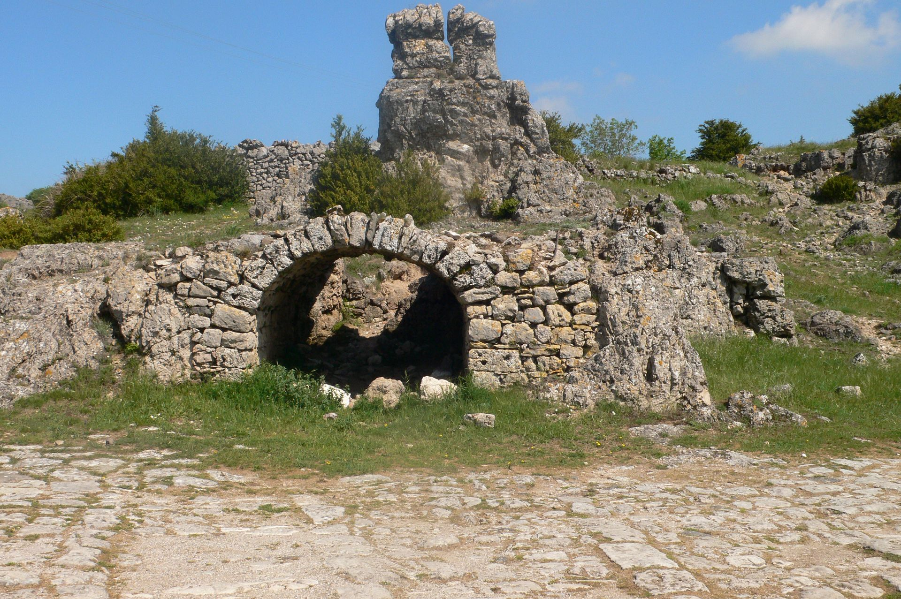

Cirque de Labeil et sa grotte








Description de l'événement
Le Cirque de Labeil est un site naturel exceptionnel, offrant des paysages à couper le souffle et des sentiers de randonnée variés.
Cette randonnée vous emmène à travers des formations rocheuses impressionnantes, des gorges profondes et des panoramas spectaculaires sur la vallée de l'Hérault.
Le parcours est adapté à tous les niveaux de randonneurs, avec des options pour les débutants ainsi que pour les plus expérimentés.
Au cours de la randonnée, vous aurez l'occasion d'observer une faune et une flore diversifiées, ainsi que des vestiges historiques témoignant de l'occupation humaine dans la région depuis des siècles.
Que vous soyez à la recherche d'une aventure en plein air, d'une escapade en famille ou d'une immersion dans la nature, le Cirque de Labeil est une destination incontournable pour les amateurs de randonnée dans l'Hérault.
Détails de l'événement
- Type : Randonnée pédestre
- Distance : 8 km
- Date : 15 août 2024
- Heure de départ : 9h00
- Heure d'arrivée : 13h00
- Durée : Environ 4 heures
- Lieu de rendez-vous : Parking du Cirque de Labeil
- Lieu d'arrivée : Parking Cirque de Labeil
- Niveau de difficulté : Moyen
- Équipement recommandé : Chaussures de randonnée, eau, chapeau, crème solaire
- Tarif : 20€ par personne (inclut le guide et les frais d'entrée)
- Accessibilité : Sentiers accessibles aux personnes à mobilité réduite
- Dénivelé : 300 mètres
- Altitude maximale : 450 mètres
- Point d'eau / ravitaillement : Disponible sur le parcours
Inscrivez-vous dès maintenant pour participer à cet événement !
Pour toute question, n'hésitez pas à Nous contacter